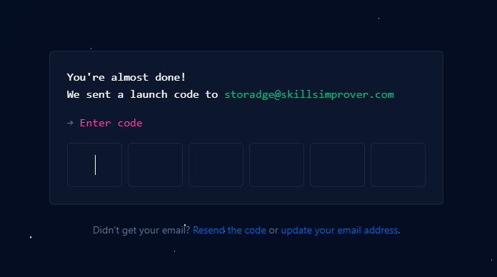
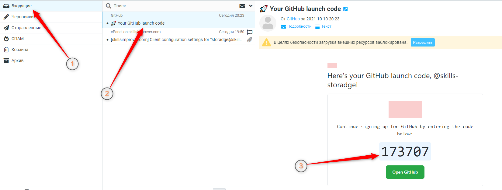

После создания аккаунта, GitHub вышлет вам проверочный код на email, о чем сообщит на следующей странице:
Перейдите в почту и найдите письмо с кодом:
Введите код в поле, подождите совсем немного и, наконец-то GitHub поприветствует вас!
Давайте внимательно посмотрим – что это за вопросы с правой стороны?